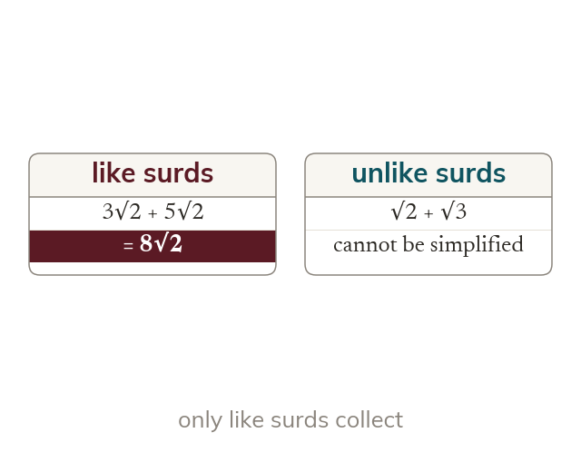
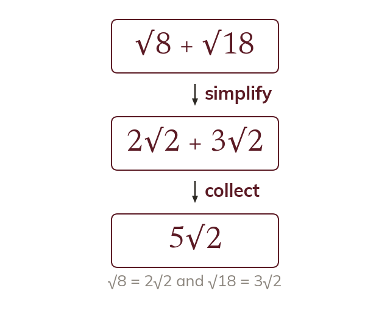
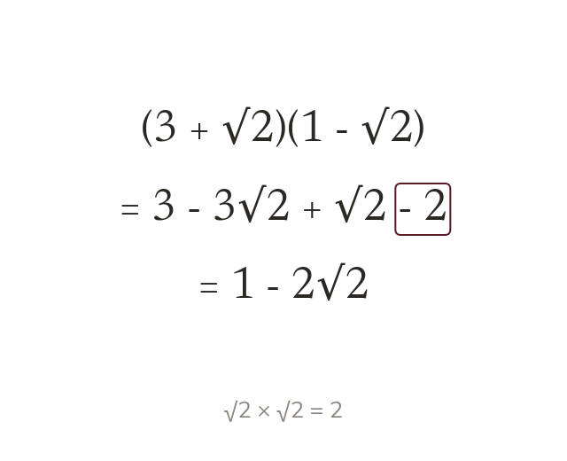
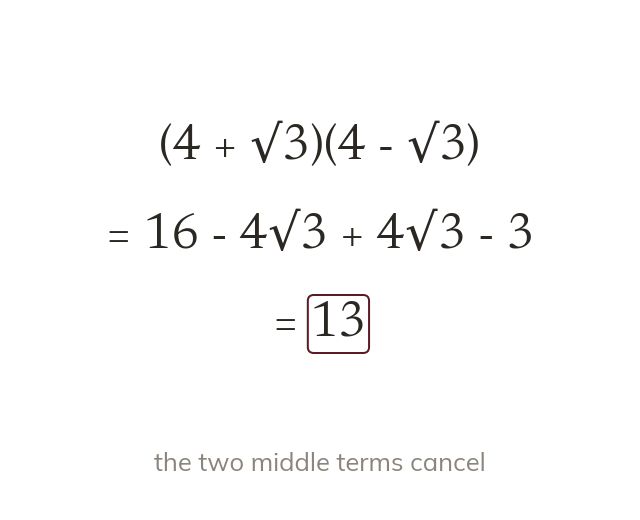

Like surds collect
Surds with the same number inside are like terms. So 3√2 + 5√2 = 8√2, but √2 + √3 stays as it is.
Exact answers often combine numbers and surds, such as 3 + 2√5. Today we add, subtract and expand surds exactly as we would in algebra.
Work down the page at your own pace. Write every answer in your book first, then click to check it.
Read each card, then follow the worked examples one step at a time.

Surds with the same number inside are like terms. So 3√2 + 5√2 = 8√2, but √2 + √3 stays as it is.

Surds that look different may simplify to like surds. So √8 + √18 becomes 2√2 + 3√2 = 5√2.
Pick an answer. If it's wrong, the feedback tells you which mistake it was.
Read each card, then follow the worked examples one step at a time.

Brackets with surds expand like algebra. Then √a × √a = a turns a surd into a whole number.

In (a + √b)(a - √b) the surd terms cancel. The result, a² - b, is a whole number.
Pick an answer. If it's wrong, the feedback tells you which mistake it was.
Finished? Next lesson: 11H.1.3 Rationalising Simple Denominators.
Log in, then search for a code to practise that skill.
Videos, worksheets and more on each part of this lesson.